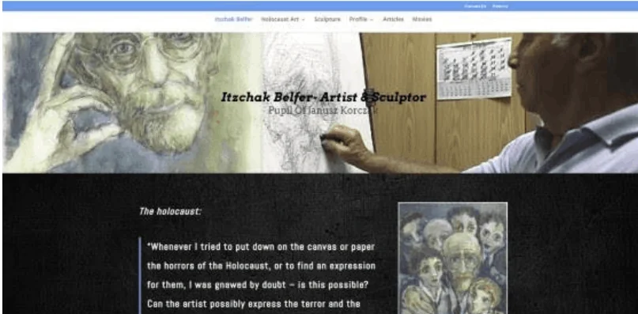
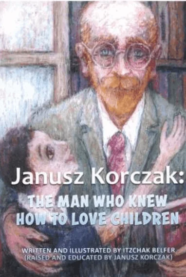
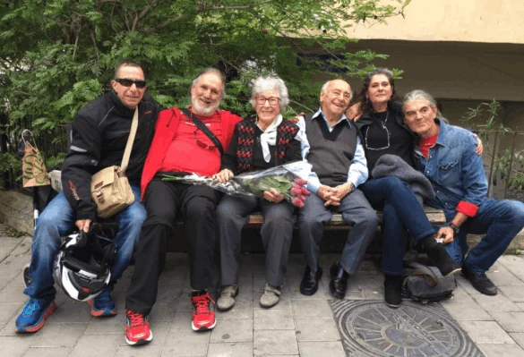

People around the world are uniting in and grieving the sad loss of Itzhak Belfer, the last surviving graduate of Dom Sierot Orphanage.
What a legacy he has left with his stories, writings, paintings and sculptures conveying his and others’ life experiences through the worst of times and treasuring and sharing what he had learned!

"Janusz Korczak and Stefa Wilczynska represent a ray of light and beacon along the somber journey of my life, from childhood in the orphanage under their direction, to this very day. Thanks to them, I have adopted a way of life based on values of humanity, honesty, justice, and consideration for others. Thanks to their theories and pedagogy, I have managed to overcome obstacles and to create a positive dialogue with people and the world in which I live."
Itzhak Belfer dedicated his life to the memory of Janusz Korczak "The Man Who Knew How to Love Children," as he titled his illustrated book for the children of today. "Many children have stories to tell of their childhood. My life's mission is to tell about Janusz Korczak," said Belfer, as recorded in the beautiful book, Janusz Korczak: Sculptor of Children's Souls.

The International Korczak Association (IKA) shared this very sad news and I quickly shared it with those in Australia working with commitment in the Janusz Korczak Association Australia (JKAA), including Dalia Gurfinkel. Dalia’s father-in-law was a close friend of Ignat (Itzhak) from early days in Poland and the Gurfinkel family have kept in close contact with Ignat and his family.
After conversations with Dalia over the last few days, Dalia sent the following:
Ignat’s words on our very first meeting (over twenty years ago) were “the noblest profession in the world is education of children” he was delighted that his best friend’s son married a teacher with a passion bordering on an obsession of Shoah studies. We had many long conversations about the Shoah and Ignat’s experiences both during his time in Janusz Korczak orphanage and his gratitude to Stefania Wilchek for recognising his talent to draw and nourished his gift. He did say that he addressed Korczak as Doktor Goldszmit.
My father in law Zeev Gurfinkel, his brother Sasha Gurfinkel and Ignat met as they escaped from Poland to Russia. They became family. There were no other survivors from both families. Ignat and Zeev’s lifelong friendship intertwined creating a bond that exceeded regular family ties.
Ignat’s endless optimism, contagious smile, thirst for life and drive to educate the new generations are only a tiny part of his legacy and my inspiration.
I rise a shot of Vodka (his favourite) in his honour and memory.
Dalia Gurfinkel
A 12 year old girl who already does much for children’s rights and is putting so much time and energy into the development of this website sent me the following after receiving this very sad news:
I'm so sorry to hear about Itzhak Belfer. I searched him up and he did the illustration of King Matt the first! I'm sure he will remain in the heart of the organisation. :)
Thank you very much for these heartfelt words. With the determination and commitment of the wonderful people involved in JKAA I believe we will keep Itzhak Belfer and Janusz Korczak at the heart of this association. As I believe will be with all Korczakians.
Our hearts and minds are with the family and friends of Itzhak Belfer. May his memory be a blessing. This Last Korczak Boy will be sadly missed but always treasured through the timeless legacy he has left and the people whose lives he touched.
With sincere condolences to Izhak’s family and friends,
Karin Morrison and the Janusz Korczak Association of Australia